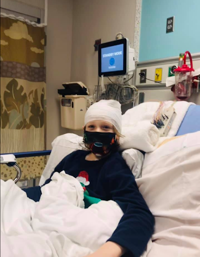

Team Rhinebeck Extra Life
Want to help? Donate or Watch this video about Extra Life
Want to play on the Minecraft server? Enter the ip address: join.teamrhinebeck.com
Story
On February 18, 2021, one of our family members experienced a medical emergency that required a stay at the Albany Medical Center Children’s Hospital. Thanks to the medical team there he is doing great now! One of the benefits of a children’s hospital is the environment it creates for pediatric patients. He enjoyed playing video games during his stay at the hospital which helped provide a bit of fun during a stressful time. Extra Life, a program of Children’s Miracle Network Hospitals, provides a great opportunity on November 5th to raise funds for children’s hospitals through video gaming. We have chosen for our team to donate to Albany Medical Center Children’s Hospital. Please consider donating, watching our livestream, or gaming with us on November 5th!

Team Rhinebeck Volunteers
- Eoghan Haughey (Project Manager)
- Wallace Cole (Advertisement & Team Coordinator)
- Conall Haughey (Advertisement)
Minecraft Livestream